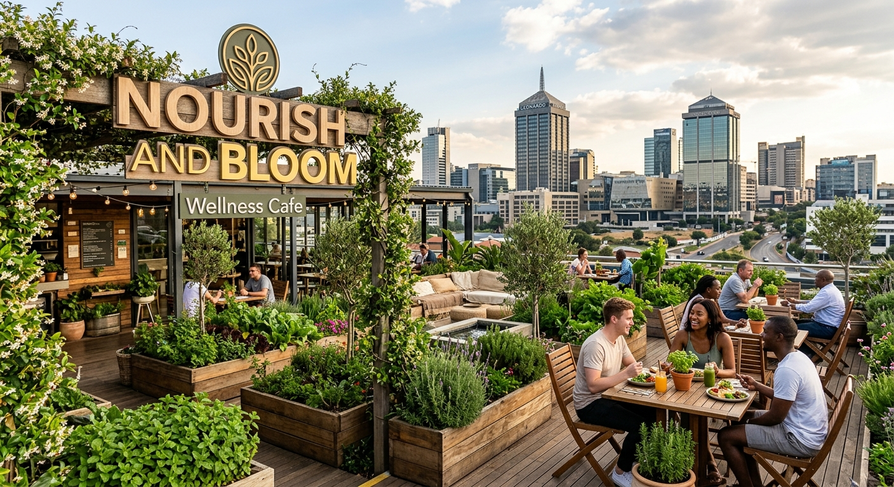
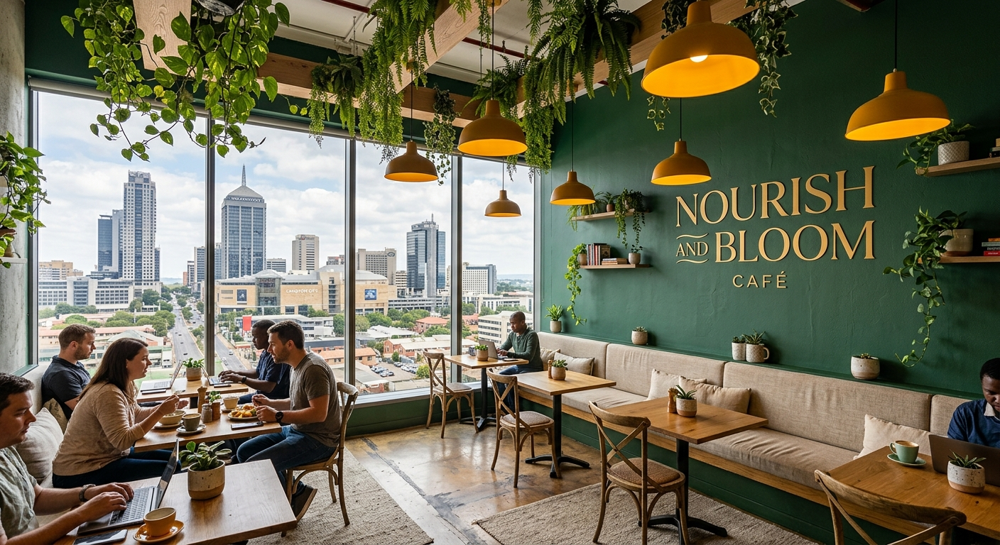

Rooftop herb garden
Basil, mint, sorrel and edible flowers grown two floors above the counter and harvested daily by our kitchen team.

Cold-pressed citrus, fresh rooftop herbs, and slow coffee served three minutes from Sandton City.
See the Menu Find UsNourish and Bloom began as a single planter box on a Sandton office balcony. Today we grow more than forty herb and leaf varieties on our rooftop, and everything on the counter is built around what is cut that morning.
We are a working café, not a retreat. Expect quick, generous breakfasts before meetings, long lunches beneath the fig trees, and staff who remember how you take your coffee.
Read Our Story
Basil, mint, sorrel and edible flowers grown two floors above the counter and harvested daily by our kitchen team.
Cold-pressed juices, fermented sodas and grain bowls designed to carry you through an afternoon in the CBD.
Fast fibre and quiet booths inside, shaded long tables outside, and a no-rush policy on second cups.
Our terrace seats up to forty guests and our kitchen builds seasonal menus for workshops, birthdays and corporate mornings across Sandton.
Send an Enquiry